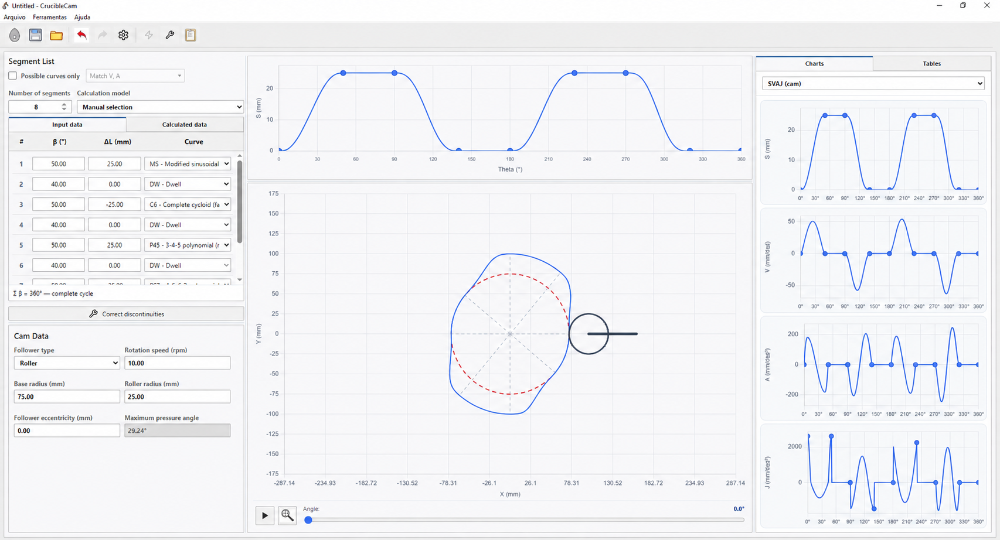

Por Artur Henrique de Freitas Avelar · Publicado em · Assistir no YouTube
Este artigo acompanha o vídeo acima, que apresenta os recursos básicos do CrucibleCam por meio de um exemplo prático de projeto de came radial. A demonstração percorre as principais etapas do processo, desde a definição do movimento do seguidor até a correção de descontinuidades nas curvas cinemáticas resultantes.
Neste artigo
Definição do ciclo de movimento
A primeira etapa consiste em especificar o movimento desejado para o seguidor. Na interface principal, o usuário informa o intervalo angular e a variação de deslocamento de cada trecho do ciclo. Os trechos são organizados até que a soma de seus intervalos angulares corresponda a uma volta completa do came (360°).
Essa representação permite definir os trechos de subida, retorno e repouso de acordo com o movimento exigido pelo mecanismo.
Seleção das leis de movimento e geração do perfil
Ao selecionar uma curva de deslocamento para cada trecho, o CrucibleCam apresenta somente as opções compatíveis com a configuração do projeto e com as escolhas realizadas anteriormente. À medida que as leis de movimento são selecionadas, as opções restantes tornam-se mais restritas, facilitando a construção de uma sequência viável.
O perfil do came é calculado imediatamente, permitindo ao usuário examinar sua geometria e verificar a existência de descontinuidades nas curvas de deslocamento, velocidade, aceleração e jerk (SVAJ). Atualmente, o CrucibleCam permite projetar cames radiais com seguidores de face plana e de rolete.

Busca automática e comparação de soluções
Em vez de selecionar manualmente cada lei de movimento, o usuário pode solicitar uma busca automática. O software identifica combinações viáveis de curvas de deslocamento para os intervalos angulares e os deslocamentos do seguidor especificados.
Os resultados podem ser ordenados segundo diferentes critérios de projeto. Isso facilita a comparação de alternativas e auxilia o projetista na seleção de uma configuração mais adequada à aplicação pretendida. Uma combinação viável, entretanto, não garante necessariamente a continuidade em todas as transições entre os trechos.
Correção de descontinuidades
No exemplo apresentado no vídeo, a combinação selecionada possui uma descontinuidade de aceleração na transição entre trechos. Essa variação abrupta pode provocar efeitos dinâmicos indesejáveis, aumentando as vibrações e os esforços e reduzindo potencialmente a vida útil do mecanismo.
O CrucibleCam dispõe de um recurso específico para a correção de descontinuidades. O vídeo demonstra duas abordagens:
- Alteração dos intervalos angulares (β): o software redistribui os ângulos dos trechos, mantendo as variações de deslocamento especificadas.
- Alteração do deslocamento do seguidor (ΔL): o software modifica as variações de deslocamento, mantendo os intervalos angulares especificados.
Em ambos os casos, o perfil do came e as curvas cinemáticas são recalculados para representar a solução corrigida. O projetista pode então avaliar se as alterações são compatíveis com os requisitos funcionais do mecanismo.
A demonstração ilustra como o CrucibleCam integra as principais etapas do projeto de cames em um ambiente interativo, facilitando o estudo das leis de movimento, a comparação de alternativas e o aprimoramento do projeto.
Dúvidas sobre a demonstração? Entre em contato pelo e-mail arturavelar@ufsj.edu.br. · Sobre o autor · Privacidade